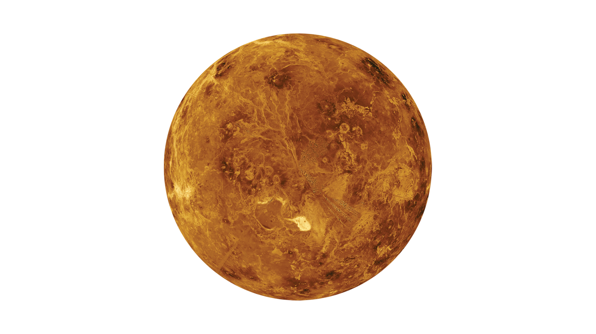

Венера (Шолпан)
Жердің егізі: Системалық сипаттама
Венера — Күн жүйесіндегі екінші планета және Жерге ең жақын орналасқан. Ол көлемі мен массасы бойынша Жерге өте ұқсас болғанымен, бетіндегі температурасы Күн жүйесіндегі ең ыстық. Бұл температураға планетаның күшті парниктік эффектісі себеп болады. Оның қалың атмосферасы беткі қабатын көруді қиындатады.
Қызықты Деректер (DATA ARRAY)
Ең Ыстық Планета:
Венераның орташа беткі температурасы шамамен 471 °C. Бұл Меркурийден де ыстық, себебі парниктік эффект.
Қарсы Айналу:
Басқа планеталардың көпшілігінен айырмашылығы, Венера өз осінен кері бағытта (сағат тіліне қарсы) айналады.
Ұзақ Тәулік:
Венераның бір тәулігі (243 Жер тәулігі) оның Күнді айналу уақытынан (бір жылынан - 225 Жер тәулігі) ұзағырақ.
Атмосферасы:
Атмосферасы негізінен көмірқышқыл газынан (96%) тұрады. Бұлттары күкірт қышқылынан құралған.
Спутниктің Жоқтығы:
Венерада табиғи серіктері (айлары) жоқ. Бұл тек Меркурий мен Венераға тән қасиет.
Атмосфералық Қысым:
Венера бетіндегі атмосфералық қысым Жердегіден 92 есе жоғары. Бұл су астында 900 метр тереңдікке сүңгумен бірдей.